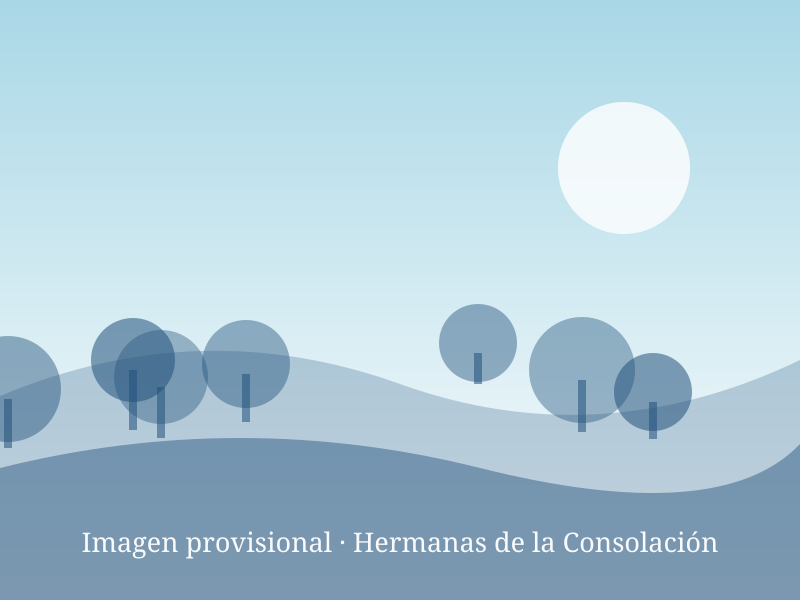

Una historia de consuelo y comunidad
Desde 1970 acompañamos la vida de los más vulnerables de Río Cuarto. Conocé nuestro origen, a las Hermanas de la Consolación y al equipo que hace posible cada día.

Nuestro origen y fundación
El Pequeño Cottolengo Don Orione de Río Cuarto nació hacia el año 1970, impulsado por el espíritu misionero y caritativo del Padre Geniale Silvi (sacerdote de la congregación orionita), con el respaldo del Obispado de Río Cuarto y el trabajo incansable de una recordada comisión de vecinos benefactores de nuestra ciudad.
Tortosa (España): Santa María Rosa Molas funda la Congregación de Hermanas de Nuestra Señora de la Consolación.
Río Cuarto: la casa abre sus puertas como un refugio de dignidad para acoger, cuidar y acompañar a los más desprotegidos.
Hermanas de la Consolación: asumen la conducción, administración y cuidado integral del hogar.
Seguimos acompañando la vida con atención profesional, espiritualidad y ambiente de familia.
Las Hermanas de la Consolación y Santa María Rosa Molas
Desde el año 2001, la conducción, administración y cuidado integral del hogar están a cargo de la Congregación de Hermanas de Nuestra Señora de la Consolación.
La Congregación fue fundada en 1857 en Tortosa (España) por Santa María Rosa Molas y Vallvé, una mujer adelantada a su tiempo que consagró su vida a la atención de los enfermos, los ancianos, los niños y las personas en situación de exclusión.
Su misión fundacional inspira cada gesto cotidiano de nuestra comunidad en Río Cuarto y en todas las obras educativas, sanitarias y residenciales que la Congregación desarrolla en Argentina y el mundo.

«Prolongar la obra evangelizadora de Cristo entre los que padecen cualquier necesidad; con nuestro servicio les anunciaremos a Jesús como única y auténtica consolación».Misión fundacional · Santa María Rosa Molas
Misión, visión y valores
Misión
Brindar alojamiento permanente, asistencia sociosanitaria integral y rehabilitación a personas con discapacidad y adultos mayores en situación de vulnerabilidad, garantizando el pleno ejercicio de sus derechos, su inclusión comunitaria y el acompañamiento espiritual desde el carisma de la Consolación.
Visión
Ser una institución referente en Río Cuarto y la región por la excelencia humana, ética y profesional en el cuidado integral, manteniendo siempre las puertas abiertas a la solidaridad de la comunidad.
Dignidad y Buen Trato
Cada residente es el centro de nuestra labor; respetamos su historia de vida, su singularidad, sus tiempos y sus derechos fundamentales.
Calidez y Consolación
Cuidamos desde la cercanía, la ternura y la escucha activa, construyendo un auténtico ambiente de hogar y familia.
Profesionalismo y Rigor Ético
Protocolos asistenciales interdisciplinarios, estricto cumplimiento de la normativa sociosanitaria vigente y absoluta transparencia administrativa.
Comunidad y Providencia
Trabajo articulado entre el equipo profesional, las familias, el Estado, los voluntarios, los padrinos y las empresas de nuestra región.
Profesional y asistencial
La calidad de nuestro cuidado nace de la unión entre la vocación de servicio y la formación técnica continua, con un equipo interdisciplinario comprometido con la calidez en el trato y la excelencia profesional.
Dirección Congregacional y Técnica
Liderada por las Hermanas de Nuestra Señora de la Consolación junto a profesionales de gestión sociosanitaria, garantizando coherencia institucional, supervisión permanente y calidad asistencial.
Médico y Enfermería
Un profesional médico clínico y licenciados/auxiliares de enfermería que realizan seguimiento preventivo, control de medicación y atención de salud las 24 horas del día.
Equipo Técnico Interdisciplinario
Especialistas en Trabajo Social, Psicología, Kinesiología, Terapia Ocupacional, Fonoaudiología y Nutrición, que diseñan Planes Individuales de Atención (PIA).
Cuidadores Gerontológicos y de Discapacidad
Personal capacitado en el acompañamiento diario (higiene, confort, alimentación y movilidad), brindando presencia afectuosa y contención constante.
Personal de Soporte Institucional
Cocina, lavadero-ropería, mantenimiento edilicio y administración sostienen con dedicación el funcionamiento impecable de cada rincón del hogar.
¿Querés sumarte?
Buscamos personas con vocación de servicio, empatía y compromiso ético.
Trabajá con nosotros